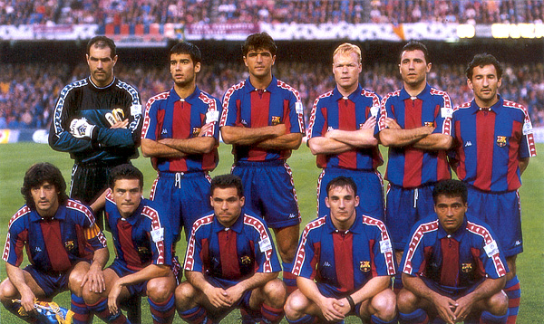
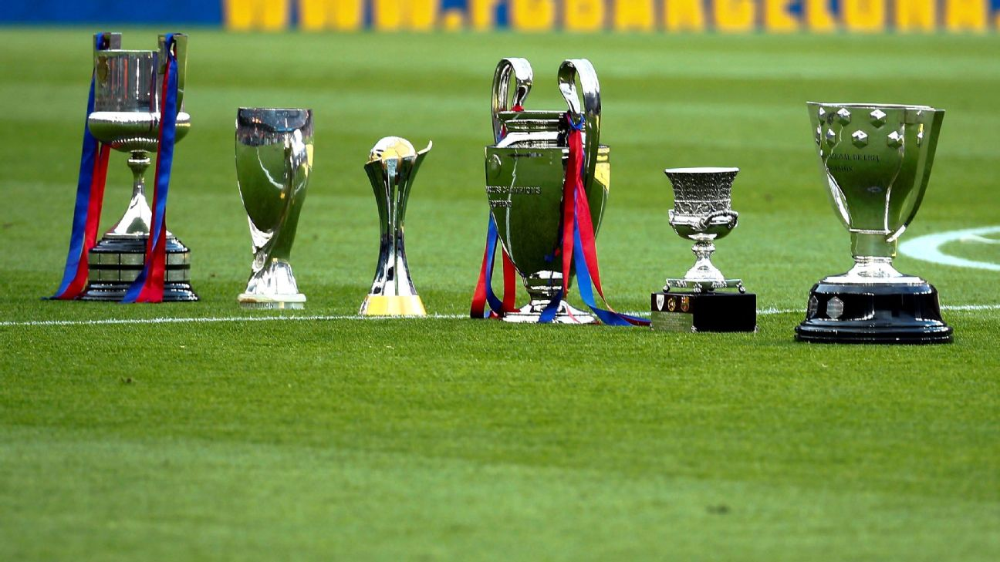
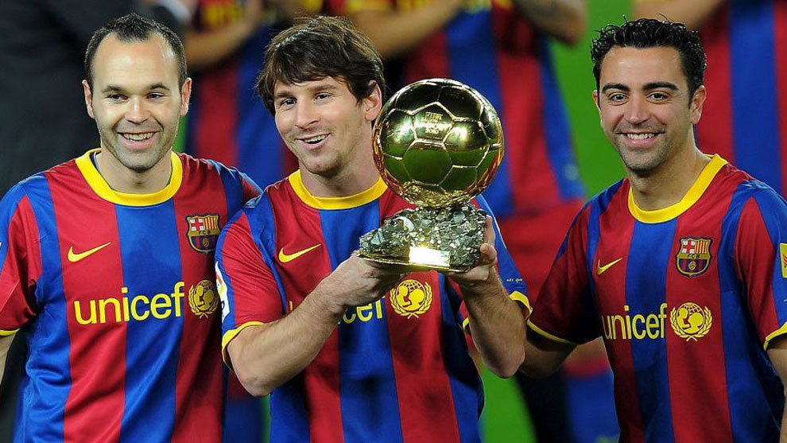

La aventura de la creación del FC Barcelona en 1899 por un grupo de jóvenes, extranjeros y catalanes que vivían en Barcelona, fue la consecuencia de un proceso de expansión de la práctica del fútbol y otros deportes de origen británico en el continente europeo. Esto explica la naturaleza intercultural del Club, su vocación polideportiva y la voluntad de arraigo en una ciudad y en un país. Gamper, fundador del Club, fue el alma y el impulsor durante los primeros 25 años. Su compromiso con el FC Barcelona va más allá de sus facetas como jugador, directivo y presidente
El 13 de agosto de 1973 Cruyff ya era azulgrana. Se convirtió en el líder de un equipo de talento dirigido por Rinus Michels que devolvió la alegría en el Camp Nou. Cruyff escenificaba un juego inteligente y tenía una técnica soberbia, como jugador fue sorprendente y su paso por el barcelona realzo la idea futbolistica del club y aumento el nivel del equipo al punto que era uno de los equipos mas respetados de toda europa, pero no se lograban nunca los resultados esperado a nivel de trofeos
A partir de 1988, con Johan Cruyff como entrenador, volvieron el buen fútbol y los éxitos deportivos,El FC Barcelona consiguió encarrilar cuatro campeonatos de Liga consecutivos entre 1990 y 1994. La conquista de la Copa de Europa en 1992 marcó el punto culminante de esta etapa, recordada por el juego de toque, el afán ofensivo y el espíritu ganador de los jugadores de Cruyff, este grandioso equipo seria conocido como el dream team y fue una de las mejores generaciones del equipo azulgrana
A partir de la temporada 2008/09, bajo la dirección de Josep Guardiola el equipo tomó nuevas energías, entre otros títulos, de dos Ligas de Campeones y tres campeonatos de Liga, así como el ansiado Mundial de Clubes, que culminaba en un año, en 2009, en el que el equipo ganó seis títulos, un hito sin precedentes en la historia del fútbol mundial.
El FC Barcelona hizo historia con la nominación de Xavi, Iniesta y Messi como finalistas al FIFA Balón de Oro 2010. Tres futbolistas formados en La Masia ocupaban un podio que sería azulgrana. Periodistas, seleccionadores y capitanes de todo el mundo, la élite del fútbol mundial, se rendían al estilo del Barça
